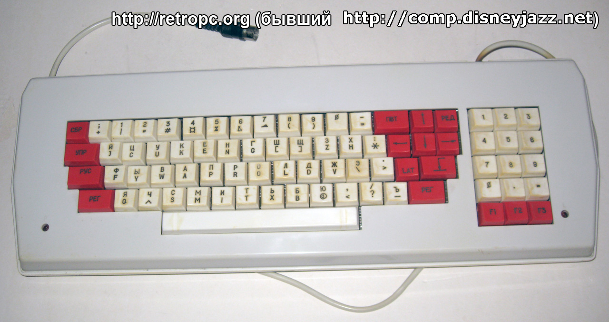

Shift - русский, Ctrl - норвежский, Windows - английский
Вступление
На клавиатурах советского компьютера АГАТ-9 для переключения раскладки клавиатуры были отдельные кнопки "РУС" и "LAT".
 Клавиатура Компьютера Агат 9. Изображение с сайта retropc.org.
На современных компьютерах, к сожалению, таких кнопок больше нет, поэтому переключать языки приходится по-другому. Хотя с другой стороны, вряд ли удалось бы найти клавиатуру с тремя кнопками для русского, норвежского, и английского языков. Так что, может быть, это и к лучшему?
Реализация
-
Настроить Windows так, чтобы у каждого языка было бы своё сочетание клавиш. В Windows 11 это делается так:
-
открыть настройки (Settings)
-
перейти в раздел "Time and language" (в колонке слева)
-
Затем "Typing" - "Advanced keyboard settings" (большие кнопки)
-
Нажать маленькую ссылку "Input language hot keys" - откроется нужное окно настроек.
-
Там для каждого языка установить сочетание клавиш Ctrl+Shift+цифра:
- выбрать русский язык
- нажать "Change Key Sequence..."
- поставить галочку "Enable Key Sequence"
- в левом меню выбрать "Ctrl+Shift"
- в правом меню выбрать цифру "1"
- OK
-
Повторить то же самое для норвежского языка, выбрать ему цифру "2"
-
Повторить то же самое для английского языка, выбрать ему цифру "3"
-
В итоге должно получиться так.
-
OK
И на этом как будто бы всё: теперь можно переключать языки сочетаниями клавиш Ctrl+Shift+цифра. Но чтобы использовать для этого отдельные клавиши (Ctrl, Shift, Windows), надо сделать чуть больше:
-
-
Установить программу AutoHotkey.
-
Если не удаётся установить с помощью установщика:
-
скачать ZIP-архив (большая кнопка Download - маленькая ссылка Other versions - Download ZIP) и распаковать из него два файла: AutoHotkey64.exe и WindowSpy.ahk. AutoHotkey64.exe надо сразу переместить в папку, где он будет находиться - если сделать это после следющего шага, всё потом сломается.
-
два раза щелкнуть по файлу WindowSpy.ahk - откроется окно выбора программы для его открытия. Оно должно выглядеть примерно вот так.
-
В нём надо выбрать "Choose an app on your PC" и указать программу AutoHotkey64.exe распакованную ранее.
-
В окне выбора программы нажать кнопку "Always".
-
Откроется вот такое окно с ошибкой:
Error: #Include file "UX\WindowSpy.ahk" cannot be opened".
Это хорошо - значит, AutoHotkey64 открыл этот файл.
-
Окно с ошибкой можно закрыть
-
-
{kind=link}
{kind=link}
{kind=link}
-
Создать файл скрипта для AutoHotkey.
-
Если AutoHotkey устанавливалась с помощью установщика:
- открыть подходящую папку на компьютере (например, папку "Users" на диске C:, в ней - папку с именем своего пользователя)
- Щелкнуть правой кнопкой мыши по пустому месту
- В Windows 11 - выбрать последний пункт "Show more options"
- В появившемся меню выбрать "New" ("Создать") - "AutoHotkey Script"
- Назвать новый файл, например, "lang.ahk"
- Если будут спрашивать - выбрать "Empty"/"Clean slate", нажать "Create"
-
Если AutoHotkey устанавливалась распаковкой из ZIP-архива:
- переместить файл WindowSpy.ahk в подходящую папку на компьютере (например, папку "Users" на диске C:, в ней - папку с именем своего пользователя)
- переименовать его, например, в "lang.ahk"
-
-
Записать скрипт а файл.
-
Щелкнуть правой кнопкой мыши по этому файлу
-
Если в появившемся меню есть пункт "Edit in Notepad" - выбрать его. Если такого пункта нет:
- выбрать пункт "Open with" - "Choose another app"
- откроется окно выбора программы для его открытия. Оно должно выглядеть примерно вот так.
- В нём надо выбрать Notepad и нажать "Just once".
-
Если в файле что-то есть - удалить это.
-
Вставить следующий текст:
LShift & F1::return LShift up::Send ^+1 LControl & F1::return LControl up::Send ^+2 LWin & F1::return LWin up::Send ^+3 !x::SendInput {U+0301} -
По необходимости его поправить:
-
В строчке
LShift up::Send ^+1, заменить цифру "1" на цифру того языка, который мы хотим чтобы включался по клавише Shift. Цифры языкам мы присвоили в предыдущем пункте. -
То же саме для строчек
LControl up::Send ^+2(клавиша Ctrl) иLWin up::Send ^+3(клавиша Windows). -
Последняя строчка показывает, как сделать чтобы сочетание клавиш Alt+X добавляло символ с Unicode-кодом U+0301 - символ ударения. По аналогии можно добавить любые другие символы, надо только узнать их Unicode-код. –ù–∞–ø—Ä–∏–º–µ—Ä, на этой —Å—Ç—Ä–∞–Ω–∏—Ü–µ –≤–∏–∫–∏–ø–µ–¥–∏–∏ можно узнать, что у —ç–º–æ—Ç–∏–∫–æ–Ω–∞ üï¥Ô∏è "Man in Business Suit Levitating" Unicode-код U+1F574. Поэтому, чтобы чтобы вводить его по сочетанию клавиш Alt+I, надо добавить в этот файл такую строчку:
!i::SendInput {U+1F574}
-
-
Строчки которые заканчиваются на
... & F1::returnнужны, чтобы соответствующая кнопка продолжала выполнять свою обычную функцию (Shift - делать буквы большими, Ctrl - копировать/вставить, и т.д)
Теперь, чтобы переключение заработало, достаточно запустить этот скрипт (щелкнуть по нему два раза). Но чобы не приходилось делать это после каждой перезагрузки, надо:
-
-
Добавить скрипт в автозагрузку.
-
Щелкнуть по скрипту правой кнопкой мыши
-
В Windows 11 - выбрать последний пункт "Show more options"
-
В появившемся меню выбрать "Create shortcut" (внизу, рядом с "Delete") - появится новый файл "lang - Shortcut"
-
Щелкнуть по этому новому файлу правой кнопкой мыши, выбрать "Cut" (Вырезать)
-
Открыть "Мой компьютер", диск С:, папку "Users"
-
В этой папке открыть папку с именем текущего пользователя
-
Тут открыть папку "AppData". Если её не видно, включить показ "спрятанных" папок. В Windows 11 для этого надо в верхнем меню выбрать "View", там "Show" - "Hidden items" (см. рис)
-
В папке "AppData" открыть "Roaming", там "Microsoft", дальше "Windows", "Start Menu", "Programs", "Startup". Пошутить про Кощея
-
Щелкнуть правой кнопкой мыши по пустому месту, выбрать "Paste" (Вставить)
Можно на всякий случай перезагрузить комп, чтобы проверить, что действительно работает после перезагрузки.
-
{kind=link}
Альтернативы
-
На Хабре представлен скрипт(архивная копия), работающий без настройки Windows. Правда, его самого надо настраивать.
-
На Гитхабе лежит простое приложение1, позволяющее переключать языки по нажатию произвольной клавиши вместо комбинации Ctrl+Shift.
-
Ещё есть reg-файл, настраивающий переключение языков по Ctrl+цифра. Его, естественно, надо править "для себя", если опции, удобные его автору, Вам не подоходят.
-
В приложении Punto Switcher также есть настройки горячих клавиш, правда какие - непонятно.
-
см. файл "lswitch.exe" в папке "Release" ↩